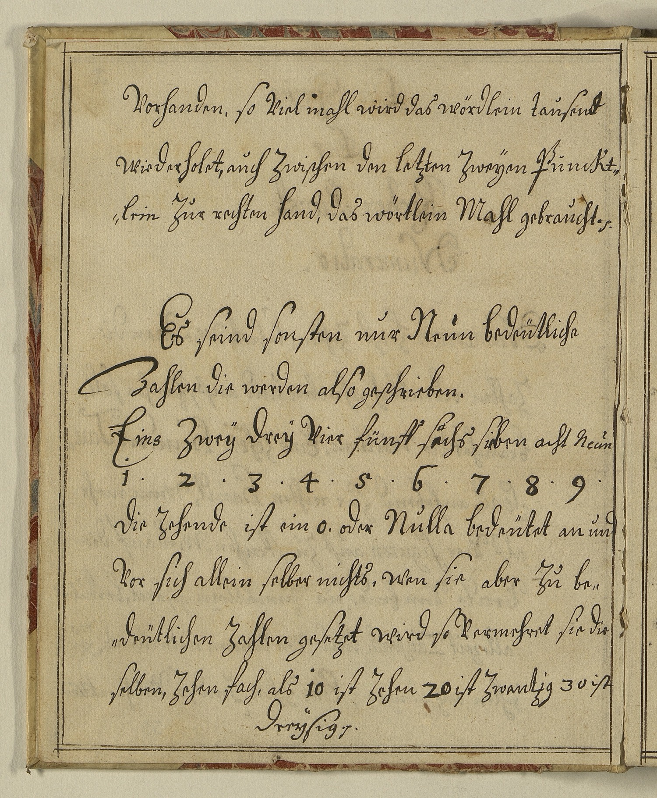

StA Amberg, Pfalz-Sulzbach, Geheime Registratur, 2/63, fol. 59–60



Kommentar
Editor: magdalena.weileder@textgrid.de
Archiv: StA Amberg
Bestand: Pfalz-Sulzbach, Geheime Registratur
Signatur: 2/63, fol. 59–60
Ort:
Datum: Anfang 18. Jh.
Schlagwort:
Schwierigkeitsgrad: leicht
Kurzbetreff:
Schreiberhände:
- Prinz Joseph-Karl (S1)
- spätere, aufgestempelte Foliierung (S2)
Kommentar:
Entzifferung
(Absatz Beginn)
1 (Prinz Joseph-Karl:) Vorhanden, so Viel mahl wird das wördlein tausend
2 wiederholet, auch Zwischen den letzten Zweÿen Punckt-
3 lein Zur rechten hand, das wörtlein Mahl gebraucht. (et cetera).
4 Es seind sonsten nur Neun bedeütliche
5 Zahlen die werden also geschrieben.
6 Eins(Wechsel des Schriftsystems) Zweÿ Dreÿ Vier fünff sechsa) sieben acht Neun(Wechsel des Schriftsystems)
7 1 . 2 . 3 . 4 . 5 . 6 . 7 . 8 . 9 .
8 Die Zehende ist ein o. oder Nulla(Wechsel des Schriftsystems) bedeütet an und
9 Vor sich allein selber nichts, wen sie aber Zu be-
10 deütlichen Zahlen gesetzet wird so Vermehret sie die
11 selben, Zehen fach, als 10 ist Zehen 20 ist Zwantzig 30 ist
12 Dreÿsig. (et cetera).
(Absatz Ende)
a) "sächs"(Textzitat) gebessert zu "sechs"(Textzitat)
Transkription
(Absatz Beginn)
1 (Prinz Joseph-Karl:) vorhanden, so viel mahl wird das wördlein „tausend“
2 wiederholet, auch zwischen den letzten zweÿen punckt-
3 lein zur rechten hand, das wörtlein „mahl“ gebraucht et cetera.
4 Es seind sonsten nur neun bedeütliche
5 zahlen, die werden also geschrieben:
6 eins(Wechsel des Schriftsystems) zweÿ dreÿ vier fünff sechsa) sieben acht neun(Wechsel des Schriftsystems)
7 1 2 3 4 5 6 7 8 9
8 Die zehende ist ein „o“ oder „nulla(Wechsel des Schriftsystems)“, bedeütet an und
9 vor sich allein selber nichts, wen sie aber zu be-
10 deütlichen zahlen gesetzet wird, so vermehret sie die
11 selben zehenfach, als 10 ist „zehen“, 20 ist „zwantzig“, 30 ist
12 „dreÿsig“ et cetera.
(Absatz Ende)
a) "sächs"(Textzitat) gebessert zu "sechs"(Textzitat)